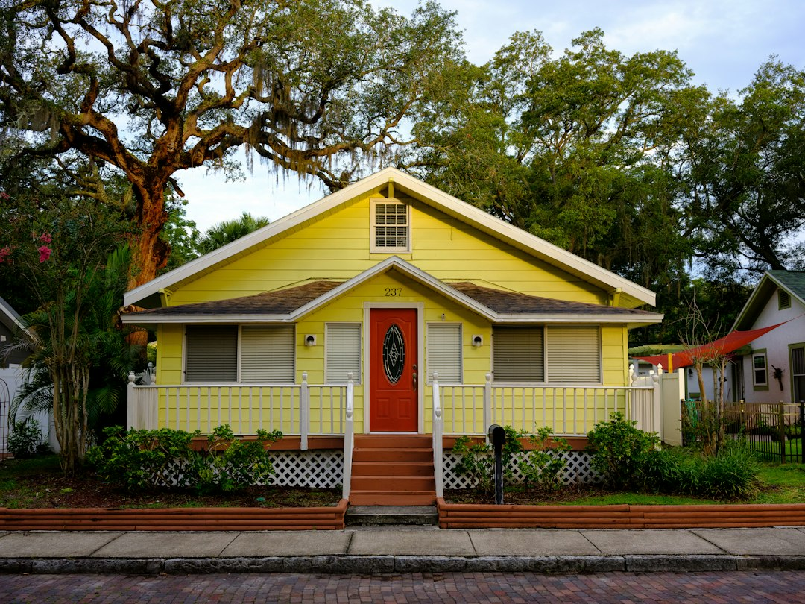

For Tampa homeowners, start with a roof inspection, then compare a written, itemised estimate that separates material, tear-off, decking, permit and warranty details. The source page says repair may suit localised damage when the rest of the roof is sound. Replacement becomes more likely when leaks return or the roof has aged out. Check any contractor licence at MyFloridaLicense.com before work begins.
For homeowners comparing roof repairs tampa options after a leak, storm damage or age-related wear, the practical task is to get evidence from the roof before accepting a repair or replacement recommendation.
Roof Repairs Tampa Explained
Roofing Contractors Tampa presents the repair question as an inspection issue, not a driveway guess. That standard matters in Tampa because the published page names heat, UV, afternoon storms and hurricane season wind as conditions that shorten roof life.
Ask the roofer to explain what was seen on the roof. A repair recommendation should identify the likely entry point, whether damage is localised and whether the remaining roof still appears sound. A replacement recommendation should point to wider ageing, recurring leaks, storm damage patterns or code issues that make patching a poor spend.
- Ask whether the scope is targeted repair, partial work or full replacement.
- Ask what photos or written notes will be supplied.
- Ask whether material, tear-off, decking, permit and warranty items are separated.
- Check the licence at MyFloridaLicense.com before approving work.
Repair or replacement signals
The source page gives a useful dividing line: if damage is localised and the rest of the roof is sound, targeted repair may be the smarter spend. Full replacement earns its cost when leaks keep coming back or the roof has aged out. That judgement should come from a roof-level inspection, especially on tile roofs, steep sections or low-slope additions where water may travel before appearing inside.
After a storm, documentation is part of the decision. The page says a proper inspection records damage in photos and writing for the insurer. Keep roles clear: the roofer documents the condition and quotes the work, while the insurer decides the claim outcome.
A related published guide on Tampa roof repair decision points gives another crawlable reference for the same repair topic.
Materials change the questions
The home page names architectural shingles, barrel tile, standing-seam metal, TPO and modified bitumen for low-slope roofs and additions. Those labels should shape the questions you ask because each system can fail, match and integrate differently.
For shingles, ask how the repair ties into the surrounding field. For tile, ask whether the inspection looked at underlayment as well as visible concrete or clay tile. For metal, ask how the quoted work addresses the observed leak path or damaged section. For low-slope areas, ask whether the quote uses TPO or modified bitumen and how that work meets the existing roof edge.
- Identify the current roof system before comparing quotes.
- Ask whether the repair material can integrate with the existing roof.
- Separate the visible damage from any hidden decking or underlayment question.
Who this applies to
This guide is for Tampa and Hillsborough County homeowners dealing with a leak after a storm, visible storm damage, an ageing roof or an inspection need before deciding what to spend. It also fits mixed roof forms, such as a shingle main roof with a low-slope addition.
Local context is useful when it changes the roof question. The source page mentions historic bungalows in Hyde Park and Seminole Heights, waterfront homes on Davis Islands and newer builds in Tampa Palms. Those examples point to different roof ages, forms and exposures. They do not replace inspection evidence, but they help frame what to ask before a quote is accepted.
What a comparable quote should show
A fair comparison needs more than a total price. The source page says one clear written estimate should itemise material, tear-off, decking, permit and warranty details. If one quote includes those items and another leaves them unclear, the two numbers may describe different jobs.
Permits should be raised before work starts. The published guidance states that residential roof covering replacement in Tampa generally requires a building permit and later inspections for Florida Building Code compliance. It also says homeowners commonly have the roofing contractor pull the permit, but should confirm that in writing.
Florida Building Code high-wind requirements are part of the page's repair and replacement framing. Ask how the quoted work will be carried out to applicable code requirements, especially where storm damage, ageing materials or full replacement are being discussed.
- Record the symptom. Note where the leak, stain or storm damage appeared and when it was first noticed.
- Book an inspection. Ask for a roof-level inspection rather than a price guessed from the driveway.
- Request documentation. Get photos or written notes showing the observed damage and recommended scope.
- Compare the estimate. Check that material, tear-off, decking, permit and warranty details are itemised.
- Verify the licence. Use MyFloridaLicense.com to check the contractor licence before work begins.
| Situation | Repair may fit when | Replacement may fit when |
|---|---|---|
| Leak or visible damage | Damage is localised and the rest of the roof is sound | Leaks keep returning or the roof has aged out |
| Storm aftermath | Photos and notes support a defined repair scope | Damage patterns or code issues make patching a poor spend |
| Quote comparison | The estimate separates materials and work items | The estimate explains tear-off, decking, permit and warranty scope |
| Roof type | The fix can integrate with the existing shingle, tile, metal or low-slope system | The existing system no longer gives a reliable base for further repairs |
Common questions
Is a full replacement always needed after a Tampa roof leak? No. The source page says targeted repair can be the smarter spend when damage is localised and the roof is otherwise sound. Replacement becomes more likely when leaks keep returning or the roof has aged out.
What should I ask for after storm damage? Ask for inspection documentation in photos and writing. The page says this documentation is what an insurer needs, while the roofer documents the condition and the insurer decides the outcome.
Do Tampa roof replacements usually need a permit? The source page states that residential roof covering replacement in Tampa generally requires a building permit and later inspections for Florida Building Code compliance. Confirm in writing whether the contractor will pull the permit.
How can I compare two roofing quotes fairly? Compare itemised detail, not only the total. The published guidance says a clear estimate should separate material, tear-off, decking, permit and warranty items.
This guide covers practical roof repair decisions for Tampa homeowners comparing inspection evidence, written estimates, permits, materials and replacement signals.